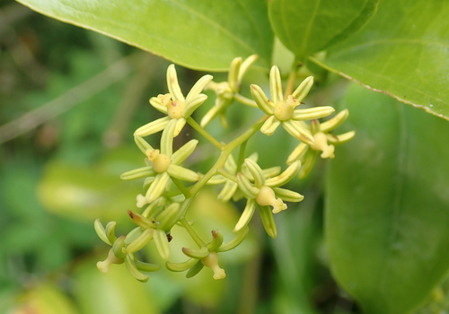

Ripogonaceae
Supplejack Family
Ripogonaceae is a small monocot family comprising a single genus, Ripogonum, with about six species of woody lianas (climbers) or scrambling shrubs. They are native to eastern Australia, New Zealand, and New Guinea. Characterized by their tough, climbing stems (often prickly), simple leaves (opposite or alternate) with reticulate venation between main veins, presence of tendrils, small 6-merous flowers in racemes or panicles, and fleshy berry fruits.
Overview
The Ripogonaceae family, solely represented by the genus Ripogonum, consists of robust woody climbers often known locally as "supplejacks" due to their strong, flexible stems. These plants are conspicuous elements in the forests and woodlands of their restricted Australasian range. They climb using their tough stems, sometimes aided by prickles or tendrils, often forming dense tangles in the forest understory or canopy.
Historically, the tough stems of supplejack (Ripogonum scandens) were used by Māori in New Zealand for various construction purposes, including building, basketry, and traps. The berries, while generally not considered highly palatable, may be consumed by birds, aiding seed dispersal. Chemically, the family contains steroidal saponins, similar to its close relative, Smilacaceae.
Phylogenetically, Ripogonaceae belongs to the monocot order Liliales, closely allied with Smilacaceae (greenbriers) and Philesiaceae.
Quick Facts
- Scientific Name: Ripogonaceae
- Common Name: Supplejack Family
- Number of Genera: 1 (Ripogonum)
- Number of Species: Approximately 6
- Distribution: Eastern Australia, New Zealand, New Guinea.
- Evolutionary Group: Monocots - Liliales
- Habitat: Forests and woodlands.
Key Characteristics
Growth Form and Habit
Woody lianas (climbers), sometimes scrambling shrubs. Stems are tough, wiry, and persistent.
Leaves
Leaves are simple, entire, typically ovate to lanceolate, and arranged oppositely or alternately (sometimes whorled). Unlike most monocots with strictly parallel venation, Ripogonum leaves exhibit prominent parallel main veins with distinct reticulate (net-like) venation between them. Petioles are present. Tendrils, possibly modified stipules or branches, are often present in leaf axils or associated with petioles, aiding climbing. Stipules are generally considered absent or very small and inconspicuous.
Stems
Stems are woody, terete (round in cross-section), and often armed with small prickles. They climb by twining or scrambling.
Roots
Possess rhizomes and fibrous roots.
Sexuality and Inflorescence
Inflorescences are axillary or terminal racemes or panicles. Flowers are typically perfect (bisexual), although some may be functionally unisexual.
Flowers
Flowers are small, actinomorphic (radially symmetrical), 6-merous, and often greenish-white, yellowish, cream, or pinkish.
- Perianth: Consists of 6 petal-like tepals arranged in two whorls of 3. The tepals are free and usually similar in appearance.
- Stamens: 6, free, positioned opposite the tepals. Anthers typically dehisce via longitudinal slits.
- Ovary: Superior, composed of 3 fused carpels, forming a 3-locular ovary. Placentation is axile, with usually 2 ovules per locule. Style is single and short with a 3-lobed stigma, or styles may be 3 and short.
Fruits and Seeds
The fruit is a globose (spherical) berry, typically red or black when mature, containing a few seeds. The persistent tepals may remain at the base of the berry.
Chemical Characteristics
Plants contain steroidal saponins, similar to those found in the related family Smilacaceae.
Field Identification
Identifying Ripogonaceae involves recognizing its unique combination of monocot features with a woody climbing habit:
Primary Identification Features
- Habit: Woody liana (climber) or scrambling shrub.
- Monocot Features: Flowers with parts in threes (6 tepals, 6 stamens, 3 carpels).
- Leaves: Simple, opposite or alternate, with characteristic reticulate venation between main parallel veins.
- Tendrils: Often present, aiding climbing.
- Fruit: Globose berry (red or black).
- Distribution: Restricted to E Australia, New Zealand, New Guinea.
Secondary Identification Features
- Stems: Often tough and wiry ('supplejack'), sometimes prickly.
- Inflorescence: Racemes or panicles of small flowers.
- Habitat: Forests and woodlands within its range.
Seasonal Identification Tips
- Year-round Features: Woody climbing habit, leaf arrangement and venation, presence of tendrils or prickles are visible year-round.
- Flowering/Fruiting Season: Flowers appear typically in spring or summer, followed by the development of conspicuous red or black berries later in the season.
Common Confusion Points
Ripogonaceae might be confused with other climbers:
- Smilacaceae (Smilax - Greenbriers): Closely related monocot climbers, often prickly with tendrils (typically paired stipular tendrils). Distinguished by often being dioecious, having flowers frequently in umbels (not racemes/panicles), and leaves usually lacking the prominent reticulate venation between main veins seen in Ripogonum.
- Dioscoreaceae (Dioscorea - Yams): Mostly herbaceous monocot vines (not typically woody like Ripogonum), often with heart-shaped leaves, usually dioecious flowers with inferior ovaries, and fruit typically a capsule or samara, not a berry. Different order (Dioscoreales).
- Various Dicot Climbers (e.g., Vitaceae, Apocynaceae, Fabaceae): Distinguished by typical dicot features like net venation (without prominent parallel main veins), flower parts usually in 4s or 5s (not 6s), different fruit types, and different stipule/tendril arrangements.
The combination of woody monocot climber, leaf venation pattern, 6-merous flowers, and berry fruit in the specific Australasian region is key for Ripogonaceae.
Field Guide Quick Reference
Look For:
- Woody monocot climber (liana)
- Leaves simple, opp/alt
- Veins: Parallel main + reticulate between
- Tendrils often present
- Stems sometimes prickly
- Flowers small, 6 tepals, 6 stamens
- Ovary superior, 3 carpels
- Fruit a berry (red/black)
- Distribution: Aus/NZ/NG
Key Variations:
- Leaf arrangement (opp vs alt)
- Presence/absence of prickles
- Flower color (whitish/yellowish/pinkish)
Notable Examples
The family contains only the genus Ripogonum:

Ripogonum scandens
Supplejack, Kareao
A common and vigorous woody climber native to New Zealand forests. Known for its tough, dark stems that form dense tangles. It has opposite, ovate leaves with characteristic reticulate venation and produces panicles of small, greenish flowers followed by bright red berries.

Ripogonum album
White Supplejack
Found in rainforests of eastern Australia and New Guinea. Similar climbing habit to R. scandens, often with prickly stems. Produces racemes or panicles of whitish or cream flowers, followed by black berries.
Phylogeny and Classification
Ripogonaceae is a small family belonging to the monocot order Liliales. This order includes well-known families like Liliaceae (lilies), Smilacaceae (greenbriers), Colchicaceae (autumn crocus), and Melanthiaceae (trilliums).
Molecular phylogenetic studies consistently place Ripogonaceae as closely related to Smilacaceae and Philesiaceae (a small family of shrubs and vines from the Southern Hemisphere). These three families form a distinct clade within Liliales, often characterized by climbing habits (in Ripogonaceae and Smilacaceae) and sometimes berry fruits. Ripogonaceae represents a distinct lineage within this group, defined by its unique combination of characters like leaf venation and flower structure.
Position in Plant Phylogeny
- Kingdom: Plantae
- Clade: Angiosperms (Flowering plants)
- Clade: Monocots
- Order: Liliales
- Family: Ripogonaceae
Evolutionary Significance
Ripogonaceae, though small, is significant for understanding monocot evolution:
- Woody Monocot Climbers: Represents one of the lineages where monocots have evolved a woody, climbing habit, showcasing adaptations like tendrils and tough stems.
- Leaf Venation: The reticulate venation between main parallel veins is an interesting feature among monocots, possibly related to supporting larger leaf blades in a climbing context.
- Biogeography: Its restricted distribution in the Australasian region contributes to understanding the historical biogeography of the Liliales order.
- Phylogenetic Link: Its close relationship with Smilacaceae and Philesiaceae helps define a specific clade within Liliales, illustrating evolutionary pathways within the order.